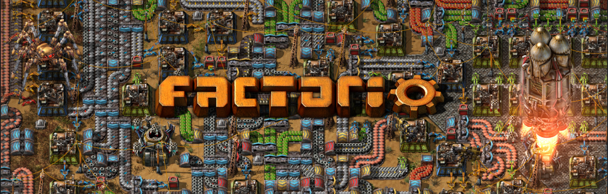

Stardew Valley
『Factorio（ファクトリオ）』は、工場建設と自動化をテーマにしたシミュレーションゲームで、「効率化することそのものを楽しむ」点に大きな魅力がある作品です。プレイヤーは未知の惑星に不時着した技術者となり、限られた資源を使いながら機械や設備を作り、工場を拡張していき、最終的にはロケットを打ち上げて脱出することを目標とします。
本作の最大の特徴は、自動化システムの奥深さです。最初は手作業で資源を集めたり物を作ったりしますが、次第にベルトコンベアや組立機、ロボットなどを導入することで、生産を自動化できるようになります。生産ラインをどのように配置すれば効率が上がるのかを考え、問題点を見つけて改善していく過程は非常に中毒性が高く、気がつくと長時間プレイしてしまうことも珍しくありません。複雑な仕組みでありながら、視覚的に理解しやすい設計になっている点も高く評価されています。
一方で、操作や仕組みが複雑なため、初心者には難しく感じられる場合があります。生産ラインが複雑になるほど、少しの設計ミスが全体の効率低下につながるため、根気強く考え続ける力が求められます。また、グラフィックやストーリー性は控えめであるため、派手な演出や物語重視のゲームを求める方には物足りなく感じられるかもしれません。
総合的に見ると、『Factorio』は効率化や最適化、問題解決を考えることが好きな方に非常に向いているゲームです。試行錯誤を繰り返しながら自分だけの工場を完成させ、その仕組みがスムーズに動き出したときの達成感は他のゲームではなかなか味わえません。考えることを楽しめる方にとって、長く遊べる非常に完成度の高い作品だと言えるでしょう。